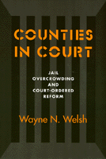

A systematic analysis of court-ordered jail reform with a pragmatic model for change
A systematic analysis of court-ordered jail reform with a pragmatic model for change


 A systematic analysis of court-ordered jail reform with a pragmatic model for change
A systematic analysis of court-ordered jail reform with a pragmatic model for change

|  |
Counties in CourtJail Overcrowding and Court-Ordered ReformWayne N. Welshpaper EAN: 978-1-56639-341-6 (ISBN: 1-56639-341-8) |
"[W]ith the very rare exception, jails have not received any sustained scholarly attention. Welsh has changed all this. His book not only tells us a lot about the process and impact of conditions litigation on jails, he tells us a lot about how jails are administered and about the operations of county government. This is a welcome book indeed."
—Malcolm Feeley, School of Law, University of California, Berkeley
Since the late 1970s, jail overcrowding has soared, sparking a proliferation of court-ordered reforms as well as public outcry over safety and spiraling corrections costs. As new jails fill up almost as soon as they open, conflict continues to grow among public officials, who, in turn, create policies that do little more than avoid blame and temporarily control the crisis.
Wayne N. Welsh proposes that we can understand this crisis by tracing the interdependence of the jail system with local agencies of criminal justice and county government. If cities and counties are to find their way out of the current jail litigation "mess," Welsh argues, problems, causes, and possible interventions must be aggressively identified within the broader legal, political, and organizational environments of jails.
Counties in Court systematically examines the onset, process, and impact of court-ordered jail reform, critically probing the broad implications of both the intended and unintended effects. Based on interviews, court documents, and government statistics, Welsh's research ranges across many different jurisdictions. Within his analysis, Welsh develops a five-stage theoretical model of court intervention designed to initiate systemwide analysis and change.
Excerpt available at www.temple.edu/tempress
"...a notable addition to the literature and will serve as a useful source for investigations of institutional reform in the future."
—American Political Science Review
Figures and Tables
Preface
1. Introduction
2. The Trigger Stage
3. The Liability Stage
4. The Remedy Stage
5. The Postdecree Stage
6. The Impact Stage
7. Conclusions and Implications
Appendix: Methodology
Notes
References
Cases and Statutes
Index
Wayne N. Welsh is Associate Professor of Criminal Justice at Temple University.
© 2015 Temple University. All Rights Reserved. This page: http://www.temple.edu/tempress/titles/1192_reg.html.